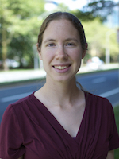
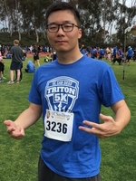

|  |
Melissa GymrekPrincipal InvestigatorMelissa is an assistant professor in the Department of Computer Science and Engineering and the Department of Medicine at the University of California San Diego. Her major research interest is to understand complex genetic variants that underlie phenotypic changes, ultimately leading to human disease. When she's not in the lab, Melissa enjoys trail running, hiking, and hanging out with her family.@mgymrek mgymrek AT ucsd DOT edu |
|  |
An ZhengMasters StudentAn is a graduate student in Computer Science at UCSD. He is interested in the applications of algorithms and machine learning methods into genomics. His current research work focuses on topics including: understanding complex genetic variants with the help of deep learning methods, and speeding up the genome assembly process by leveraging k-mer based algorithms.@PandaZRyan anz023 AT eng DOT ucsd DOT edu |
We are looking for more people to join the team! See the jobs page for more details.